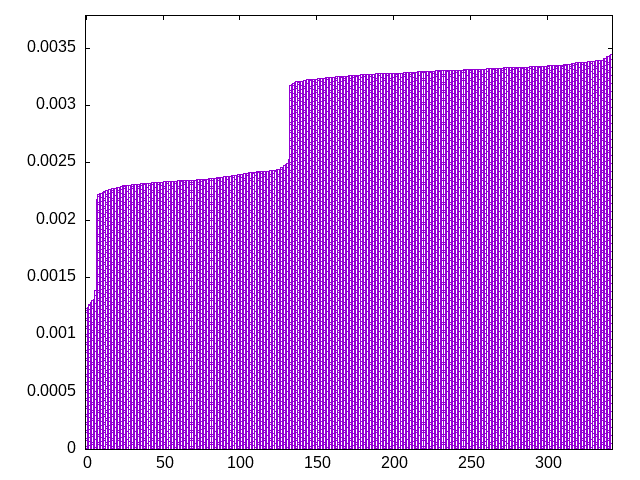
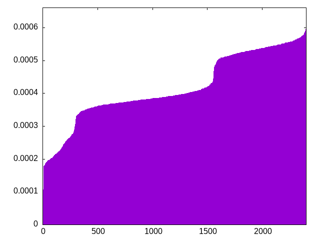

based on this reddit post -- 5 from a standard bag, 2 random, 2 least seen
sjitszoszlloojltizitlzozlostotiltjzzltssjsiojsoijllitilsotjiijozsjztlizjtjlztjsjiosisljzlsozizltjtljtlltsoizltoozzjstjisolzlooztiijzstoillojzotsjssliosziliooijjzssiljzjtstosoizltttllttojjitzjiztizsjtsstzsliojztojtoistiojsttiszlojzstllliojzttlooizilsjztliztjjszoozitsolizojsstijsljjjztlioljlslztssiiotozislzjioltzzizsssiojjozzljootjilotiojzllisoilsztijsszzljtijsottistjlilooitlslsoisjszlzszjtooiojtlzzjosjjzlzliszjoillojtssitzijiiotojjzszottllotzslstijjztooijltotsillzzittsjoisziljszozllozsojlisjizltoisjsitsoztjlzsosizjtzttissjjlljzolstoijszsjsoiltlzojijiltljtsotzizljootszlsllssitziotjttsiloilozoslsjzosjtiiojzsliosisizzzslojzjtistotziztljljliizjoljtsslzioztjoootoljliijotzsitzjltiozilotlzszotzjtjilltlojstlisizosljosjtoistjiislotljzjjsoszzszjitiitjsotojsslizzzljojltjsttilszijzoiltistiztjozsjztoiljotoosslolzjizltlzsizoljizlojssjlolztjijotizsollsszltotiiisotljoitojtzzioijzsloitzizlolszltjtszjsztjlltozosjlitijjjzlisooitlzsjtojiszottiozstlljojisszllsoitittszjlllizoisjjtootljtzoiztiszszlotojjlslooj
bagginess: 0.0149
bagginess6: 0.2408
distribution1_maxgap: 2.000000000002e-06
distribution2_maxgap: 0.005746005746005747
distribution3_maxgap: 0.0008970017940035878
distribution4_maxgap: 5.600016800050402e-05
diversity: 5.0
entropy: 11.541
evenness_diff: 5.575
evenness_same: 4.690
maxdrought: 47.0
maxflood: 6
peakdrought: 0.0
repchance: 0.1064
seq4_coverage: 1.0000
seq4_follow: 6.487
distribution3_graph:

distribution4_graph:

similarity: (lower is more similar)
| 0.005 | shift14 |
| 0.005 | bag4 |
| 0.006 | deepbag_window10 |
| 0.007 | bag3 |
| 0.009 | shift10_5 |
| 0.017 | deepbag_window7 |
| 0.017 | balanced_long_mul_pure |
| 0.018 | shift21 |
| 0.047 | wet3 |
| 0.048 | balanced_long_add_pure |
| 0.052 | seamless_bag3_pure |
| 0.067 | nes_pure |
| 0.074 | deepbag_fixed10 |
| 0.087 | shift7 |
| 0.089 | seamless_bag2_pure |
| 0.096 | bag2 |
| 0.117 | nes |
| 0.135 | fullrandom_pure |
| 0.144 | wet2_size100 |
| 0.146 | fullrandom |
| 0.240 | weight_lin_pure |
| 0.255 | weight2 |
| 0.295 | wet2 |
| 0.295 | balanced5 |
| 0.306 | balanced7 |
| 0.308 | deepbag_window4 |
| 0.356 | deepbag_fixed7 |
| 0.405 | weight |
| 0.429 | seamless_deep_pure |
| 0.463 | wet3_size12 |
| 0.579 | tgm |
| 0.590 | tgm_pure |
| 0.666 | bag_pure |
| 0.667 | bag |
| 0.698 | shift3_5 |
| 0.780 | deepbag_fixed4 |
| 0.825 | tgm_tap_pure |
| 0.826 | tgm_tap |
| 0.898 | wet_pure |
| 0.925 | weight_exp |
| 0.931 | ti |
| 1.019 | weight_exp_pure |
| 1.056 | wet |
| 1.234 | seamless_bag_pure |
| 1.940 | repeat_recent_pure |
| 3.061 | shift1_75 |
| 4.060 | repeat_last_pure |
| 9.273 | flatbag |
| 9.273 | flatbag_pure |